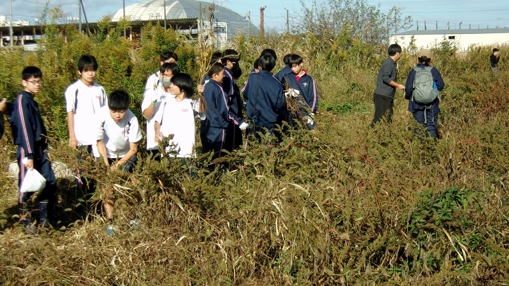
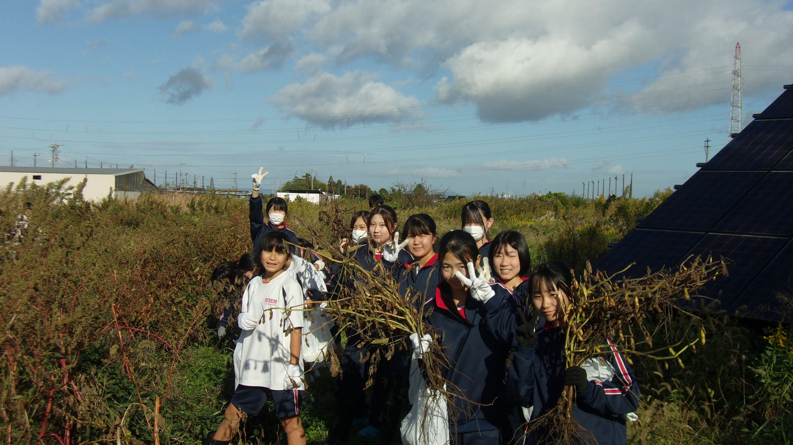
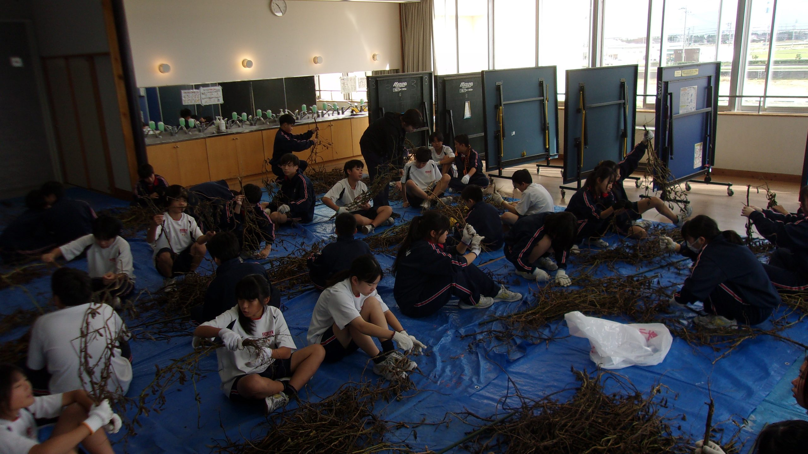
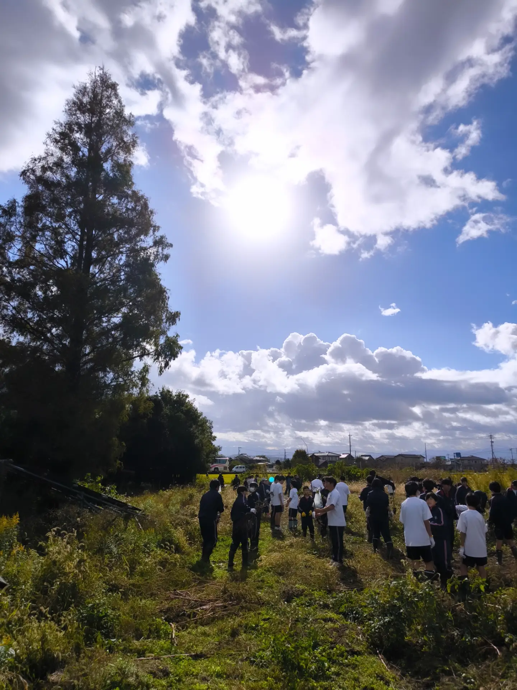
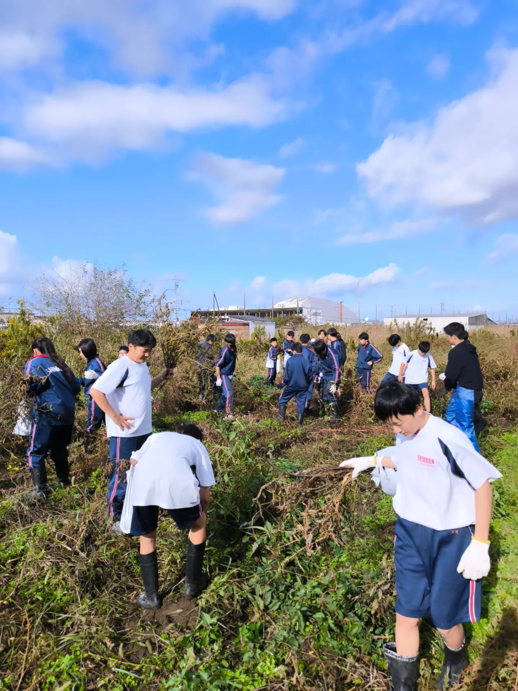
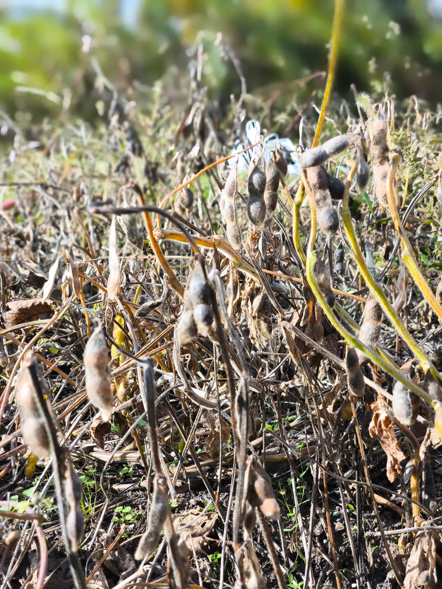
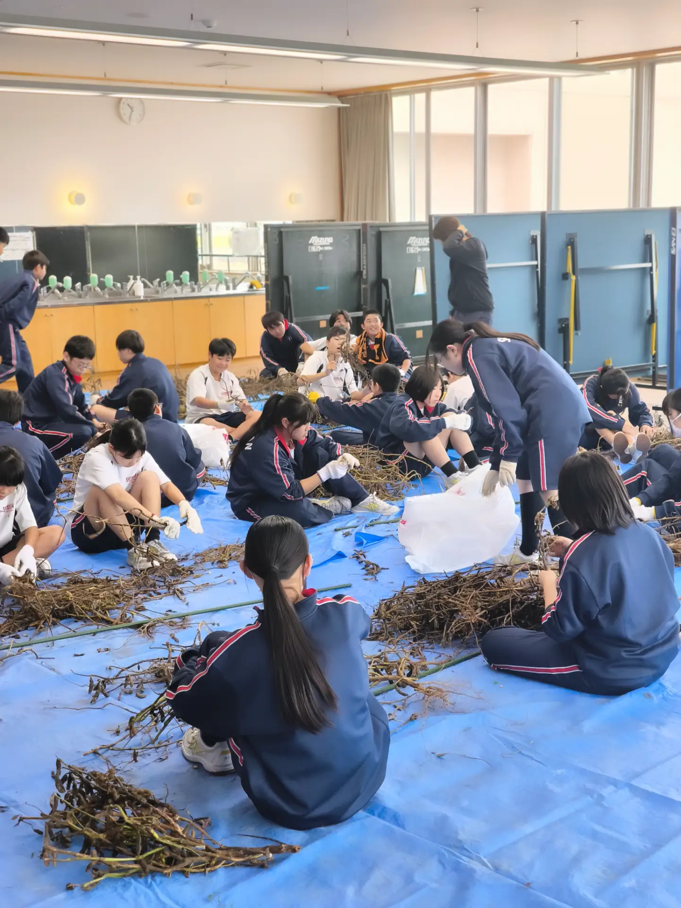
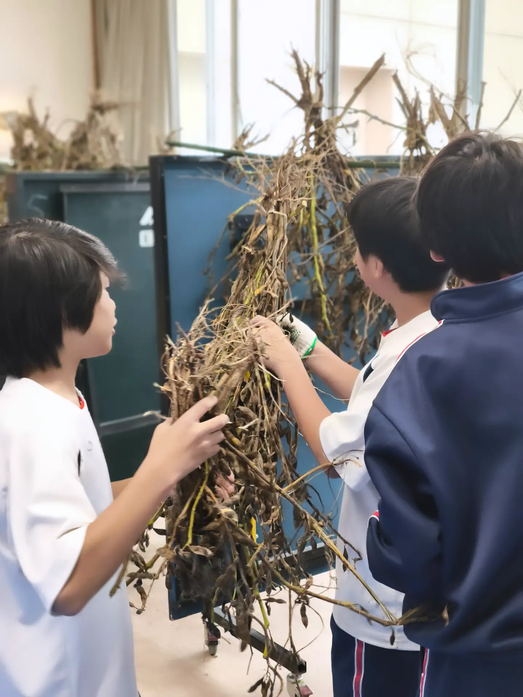
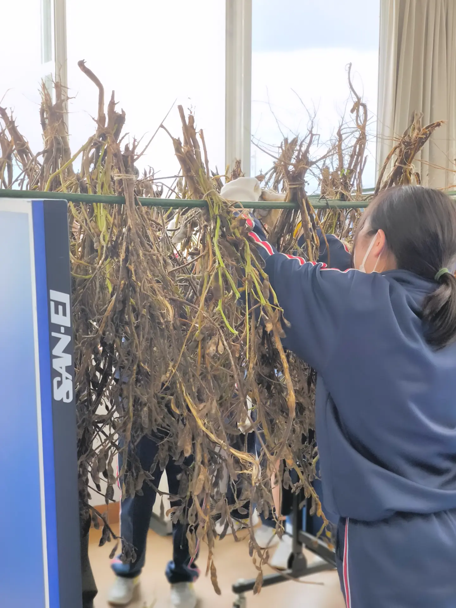

雨上がりの畑から学校へ
- 前日の雨で大豆の株が濡れていたため、畑で乾かさず、土から株ごと引き抜いて収穫
- 収穫した株を軽トラックへ積み込み、新湊南部中学校まで移送
- 乾燥・選別前の状態で、約40kgの大豆を収穫
- 栽培から収穫へ進み、加工や商品開発につながる大切な節目となった
November 6 / 2026
11月6日、生徒たちは畑で育ててきた大豆を株ごと収穫しました。 前日の雨で濡れた株を学校へ運び、約1週間乾燥させた後、脱穀と選別までを自分たちの手で行いました。
Activity Report
株を引き抜く収穫から、校内での乾燥、脱穀、選別まで。生徒たちが力を合わせて取り組んだ工程を写真で紹介します。

前日の雨で株が濡れる中、生徒たちは畑に入り、根元から大豆の株を引き抜いて収穫しました。

たくさんのさやが付いた株を持ち寄り、育ててきた大豆が実った喜びを分かち合いました。

校内で約1週間乾燥させた株をブルーシートに広げ、生徒たちが協力して脱穀と選別を行いました。
Instagram Gallery
畑に差し込んだ日差し、生徒たちが株を運ぶ姿、実ったさや、校内での脱穀と乾燥準備。 Instagram投稿から、活動の空気が伝わる6枚を紹介します。






写真提供・投稿: Instagram @soy_and_roll104
Instagramの投稿を見る